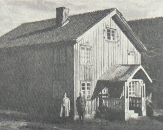

"What motivates one to be interested in a family tree and genealogy? I once heard a genealogist say that his personal interest was motivated by his interest in history and by the fact that he wanted to be remembered. Having once majored in history and now interested in genealogy I feel I can support both of these premises. I feel that families that have a strong and close relationship are supportive of each other. Interests in one's family and forebears enriches life and living. We have a rich heritage that has been blessed in many ways." -- Melvin Voxland in the introduction to Voxland Viking Saga
| Melvin Voxland was born in January of 1902. He was a second generation Norwegian-American, and learned as a child to speak fluently in the Telemark dialect of Norwegian. He graduated Concordia College and the University of Minnisota. He married Alice Cecelia Sundholm of Ely, Minnisota and together they had two children. They lived in Rochester, Minnisota and he worked as a teacher and administrator. Melvin Voxland's masterwork, however, was in genealogy. He tirelessly researched and recorded the history of Vaagsland gaard in Norway and it's diaspora into America. He corrosponded, interviewed, searched church records, and even traveled to the Vaagsland gaard Norway. His book, Voxland Viking Saga (1980), was the culmination of this research. |

|